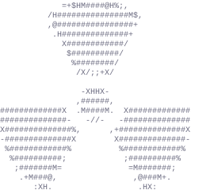

Aperture Science
We do what we can because we must.
For the good of all of us
Except the ones who are long gone.
But there's no sense crying over every mistake.
You just keep on trying till you run out of cake.
And the Science gets done
And you make a neat plan
For the people who are still alive.

Now these points of data make a beautiful line.
And we're out of beta. We're releasing on time.
So I'm G-L-A-D. I got burned.
Think of all the things we learned
for the people who are still alive.
Look at me still talking when there's Science to do.
When I look up there it makes me GLaD I'm not you.
I've experiments to run.
There is research to be done.